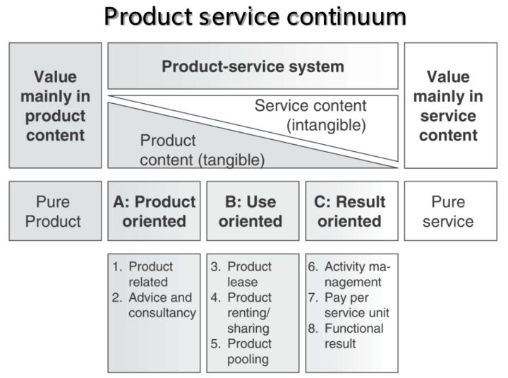

今天给大家介绍一个概念——Product Service System，姑且叫它产品服务系统吧，在国内我还找不到中文的阐述，前几天在求橙梦想班的课程，听到这个概念，然后顺藤摸瓜拿到了一个叫Arnold Tukker的学者在2004年发表的一篇论文。

核心如上图，其他部分都很容易看懂，我主要讲讲从纯产品到纯服务，逐渐过渡分为五种，并且举例说明。需要解释一下，这里说的产品是指实体，可以是硬件、也可以是软件，而服务通常指人工的服务，这里的产品加服务一起，可以认为是大产品的概念。
第一种，纯产品：Pure Product，简写为PP。
用户用的是一个实体，不包含任何服务，比如一瓶矿泉水，一个汉堡，一个看天气的App。如果硬要说仅有的一点服务，那可能是“产品说明书”。
第二种，产品导向：Product Oriented，简写为PO。
实体为主，包含少量服务。服务目的是让用户可以顺利使用产品，都是和产品紧密相关的服务。
Product Related：安装调试、保修服务、保养与耗材供应等，比如你买了空调，就会有人上门给你折腾到可以用的状态，买车的时候含3年10万公里保修，送几次保养，送几张机油券。
Advice and Consultancy：培训咨询服务，公司买了一套OA系统，就会有人来教大家怎么配置、怎么使用，你用的过程中碰到问题也可以寻求帮助。Apple Store里，给产品用户提供的一些课程，答疑解惑也是此类。
第三种，使用导向：Use Oriented，简写为UO。
依然以实体为主，和PO的区别在于，供给方给你的不是所有权，而是长期独占的使用权（Product Lease），或者是某种条件下，比如一段时间的使用权（Product Renting/Sharing），甚至是共享的使用权（Product Pooling）。因为并非买断实体，所以相关的配套服务会跟上，确保使用顺利。
上面提到的，公司买一套OA系统，卖家可以选择完全卖给你（PO），也可以按时间卖你lisence，也可以按使用人数/使用量收费（下一种模式，RO）。你有骑行需求，满足你的产品服务可以是一辆自行车（PO），也可以是一辆叫ofo的自行车1小时的使用权（Product Renting/Sharing）。你有住的需求，有的情况下得买房（PO），有的情况下长租，有的情况下买酒店里N间夜的使用权（附带的服务比较多，比如打扫、叫早、送餐、洗衣等）。公司需要打印服务，可以买一台打印机（PO），然后自己买耗材，也可以买一台打印机的长期使用权，加上定期维护、补充耗材的服务（Product Lease）。坐车出行，用滴滴拼车的话更是可以只买一辆车在某一段行程内的一个座位（Product Pooling）。
第四种，结果导向：Result Oriented，简写为RO。
到这里，就以服务为主了，你买的不是一个实体，而是一种结果，使用实体只是为了达成结果需要用的过程。
Activity Management：活动管理，类似外包，通常外包合同都包含了对服务质量进行控制的性能指标。典型的，大多数公司会把保洁工作外包出去，采购服务，只要拿到预期的结果就行，而不会选择购买（招聘）保洁人员。
Pay Per Service Unit：按用量付费，你家里用的水电煤都是这样，相应的服务是为了确保你正常使用。比如网络广告，按点击、按成交付费等模式都是按照某种用量在付费。去体检的时候，你做多少项目，给多少钱，莞式服务里貌似有某种菜单，也是这个模式。很多软件做版本区隔，也是类似的处理。
Functional Result：按有价值的结果收费，典型的例子是你需要“宜人的办公环境”（结果），而不是需要制冷设备或者冷气，你需要一次提升团队士气的团建，而不是需要一个教练、几组游戏。相关的还有买保险，你买的是一份保障，可以买不同级别，保额不同、条款不同，对应的服务结果也不同。
第五种，纯服务：Pure Service，简写为PS。
很纯的貌似也难找，比如大保健（存疑？），或者“聊个5块钱的”这种模式。
其实两两之间的界限也不是非黑即白，但整体从左到右有一种变化趋势：
从PO到UO，会造成的必然结果是短期收入减少，资产投入增加，利润减少，但预期利润增加，比如房企不买房，改做长租生意了，那就没有了卖房那一大笔的即时收入，在一段时间内的资金压力就很大。这表现在财务报表上就很难看，如果是上市公司，敢不敢做这样的决定？
从PP到PS，厂家与用户的关系有越来越紧密的趋势，触点越来越多，用户尝试的成本越来越低，PP的话，与用户的关系往往终止在销售达成的一刻，PS的话，与用户的关系往往真正开始于销售达成的一刻。在这个时代，这是一种利好，每家公司都应该想一想有没有更偏服务的模式。
不同的卖法，规模化（Scalable）的想象空间差别很大。比如卖车，瓶颈在于产量（Model 3），但卖已有车辆的使用权并抽成，瓶颈就完全不一样了。不同的卖法，可以充分利用“价格歧视”。比如UO卖软件1年的使用权，就没法向数据量大的用户收更多的钱，这时候改为RO根据数据量收费，即可以让数据量少的用户几乎免费使用，降低他们尝试的门槛，也可以充分赚取大客户的费用，对方也更愿意为好的结果付费。
以上，如果你对于这几种产品服务模式的差异，有什么好的想法，欢迎补充。
__________
iamsujie，前阿里产品经理，写过《人人都是产品经理》、《淘宝十年产品事》、《人人都是产品经理2.0》，现在做创业者服务，『良仓孵化器』创始合伙人。